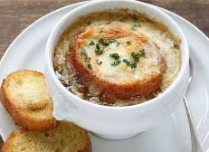
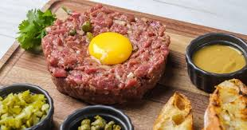
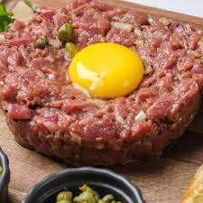
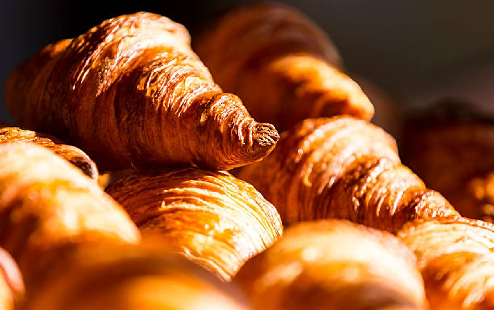
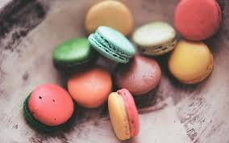
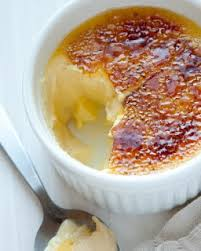

ÜLKELER
- Fransa
- İtalya
- Japonya
|
|
ÜLKELER
|
HAKKIMIZDA | İLETİŞİM | |||
Roma döneminden beri yapılan soğan çorbasının modern tarifi Fransa'ya aittir. Efsaneye göre çorba, Kral XV. Louis tarafından icat edilmiştir. Gece geç saatlerde av köşkündeyken, erzak olarak yalnızca soğan, tereyağı ve şampanya olduğunu keşfeden kral, malzemeleri pişirdi ve ilk Fransız soğan çorbasını yaptı.
Klasik çorbaların içinde oldukça bilinen ve kökeni fransa'ya dayanan soğan çorbasının tarihi antik çağlara dayanmaktadır. Antik çağlarda çanaklar içinde yapılan soğan çorbası, 18. yüzyılda modern şekilde fransa'da çıkmıştır. Zamanla fransız mutfağının en ünlü ve önemli çorbası olarak farklı kültürlerde yer edinmiştir. Üzerine kızarmış ekmek krutonları ve rendelenmiş peynir eklenir ve çorba mükemmel bir şekildegratinleşmesi için fırına verilir. Bazen restoran menülerinde'gratinée à l'oignon' olarak adlandırılır. Mükemmel bir rahatlık yemeği olan soğan çorbası, özellikle soğuk algınlığına karşı iyileştirici özellikleriyle de bilinir.
Ünlü Mekanlar: Paris'in bistro ve brasserie'lerinde

Fransa’ya özgü lezzetlerden biri olan dana tartar, demir ve B
vitamini bakımından oldukça zengin.
Protein deposu olması sebebiyle uzun yıllardır Fransa’da hazırlanan ve bağışıklığını
güçlendirmek isteyenler tarafından tüketilen dana tartar, Fransa’nın her bölgesinde oldukça
popüler.

Kas gelişimini desteklediği için sporcular tarafından
tercih edilen, başlangıç menülerinde ara sıcaklar ile birlikte sunulan dana tartarın
içerisinde satır dana kıyma, yumurta, acı hardal, kapari, acı sos, karabiber, deniz
tuzu, soğan ve maydanoz bulunuyor.
Genellikle yanında kızartılmış tereyağlı ekmek ile servis ediliyor. Zengin akşam
yemekleri için başarılı bir başlangıç menüsü olan ancak protein bakımından güçlü
olduğu için tek başına tüketilen dana tartar, yöre halkı tarafından günün her saati
tüketiliyor.

Kruvasan Fransızcada "Croissant" olarak adlandırılmaktadır.
Kruvusan birçok kattan oluşan milföy ve tereyağı hamurundan oluşmaktadır.
Avrupa'nın her yerinde genellikle de Fransa'da kahvaltıda kruvasan çokça tercih
edilir.
Kruvasanın kökeni kipfrel adı verilen mayalı başka bir hamur işine dayanmaktadır. Bu
hamur işinin 13.yüzyılda Avusturya'da çeşitli şekillerde yapıldığına dair tarihi
deliller vardır.
1683 yılında yani Osmanlı ordusunun Viyana'yı ikinci kez kuşattığı zamanda Osmanlı,
şehri ele geçirmek için surlara top ateşiyle saldırmakla kalmayıp surların altından
da şehre doğru ilerleyen bir tünel kazmıştır. Amaçları da surların hızlıca düşmesini
sağlayarak şehri ele geçirmektir.
Gece boyunca çalışan Viyanalı fırıncılar, 1683 istilası sırasında şehrin altından
tünel açmaya çalışan Osmanlı'yı duymuşlardır.
Seslerin gelmeye başladığını fark eden fırıncılar hemen şehrin muhafızlarına haber
verip gerekli önlemlerin alınmasına yardım etmişlerdir.
Şehrin muhafızlarına yardımcı olan fırıncılar, Viyana'yı Osmanlı kuşatmasından
kurtarmıştır.
Fırıncılar bu olayı anmak için kipferl isimli hamur işini Osmanlı sancağındaki
hilalden esinlenerek hilal şeklinde yaparak bugün bildiğimiz kruvasan şeklinin
oluşmasına katkı sağlamışlardır.
Kruvasanın şeklinin ortaya çıkışı konusunda farklı rivayetler mevcuttur.
Bazıları kuşatmanın sonrasında hilal şeklinde ilk kruvasanı Viyanalı fırın ustasının
yaptığını söylerken bazıları da Viyana'ya o zamanlar destek veren Sırp casusunun
satışa sunduğunu söylemektedir.
Kimileri de bu şekli vermelerinin nedeni olarak bu olayı anma isteklerinin olduğunu
kimileri de dalga geçme amacı taşıdığını söylemektedir.
Fransa'nın kruvasan ile tanışması 1770 yılında Avusturya Arşidüşesi Marie
Theresa'nın kızının Fransız veliahttı ile evlenmesiyle başlıyor. Evlilik sebebi ile
Viyana'dan Paris'e taşınan Marie Antoinette'nin eşi tahta geçiyor.
Fransız kraliçesi olan Avusturya asıllı Marie Antoinette, Viyana'dan bildiği ve
sevdiği bu hilal şeklindeki kruvasanların saray mutfağına taşınmasını sağlıyor.
Kruvasanın namı zaman içerisinde saray mutfağından saray çevreleri ve zenginlerin,
ardından da tüm halka yayılıyor ve herkes tarafından çok seviliyor.
Reçetesini Avusturya'dan şeklini ise Osmanlı'dan alan bu lezzet, işte böyle "meşhur
bir Fransız lezzetine" dönüşüyor.
Makaron, bilinen tarihinde ilk defa Avrupa’da ve Orta Çağ’da görüldü. O zamanlar makaron
badem, yumurta akı ve şekerden yapılmış küçük bir tatlıydı, dışı gevrek, içi yumuşaktı.
Makaron her ne kadar Fransız tatlısı olarak bilinse de Larousse Gastronomique’e göre ilk
olarak, 1791’de Venedik manastırlarında üretilmeye başlandı.

Fransız kraliçesi Catherine de Medici’nin 1533 yılında II.
Henry ile evlenip Fransa’ya gelmesiyle makaronun Fransa’daki tarihi başladı.
Catherine de Medici Fransa’ya gelirken yanında İtalyan aşçısını da getirir ve
törende misafirlere sunulması için bu küçük tatlılardan yapılmasını ister. Herkes
tarafından çok beğenilen bu küçük tatlılar popülerleşmeye başlar.
Fransız Devrimi ile birlikte iki Carmelite rahibesinin geçinmek için makaron yapıp
satmaları ile de makaron tüketimi gittikçe yaygınlaşmaya başlar ve Fransız halkının
vazgeçemediği tatlılardan biri olur ve rahibeler “Macaron Kardeşler” olarak
tanınmaya başlar.
O zaman yapılan makaronlar herhangi bir süsleme, aroma veya ganaj içermiyordu.

Crème brûlée adlı tatlının en eski tarifi François Massialot'un 1691 yılında
yayınlanan Cuisinier royal et bourgeois kitabında yer almaktadır.Kökeni
sorusu, modern gastronomi camiasındaki tartışmalara ilham kaynağı oldu.
Tatlı yumurta sarısı ve süt ile bir tutam un temel alınarak hazırlanır.
François Massialot, pişirildikten sonra "içine konulan şekere ek olarak
üstüne tatlandırılması gerektiğini" belirtiyor.
Bazı yazarlar Bartolomeo Stefani'nin Latte alla Spagnuola'nın (1662) crema
catalana'yı tanımladığını belirtir,üzerine şeker eklenerek servis edilmeden
önce muhallebinin üst kısmının kızartılmasını gerektirir.
Ancak öyle görünüyor ki Massialot, François Pierre de La Varenne tarafından
40 yıl önce 1651'de yayınlanan Le cuisinier françois'de anlatılan iki tarifi
alıp mükemmelleştirdi.Sırasıyla Oeufs au fait ve Oeufs à la crème olarak
adlandırılan her iki krema, çırpılmış yumurta, süt veya krema, biraz
tereyağı, tuz ve bir karışımın pişirilmesiyle yapılıyordu.
Kıvrıldıktan sonra "ateş paletiyle renklendirildi" ve servis edilirken şeker
serpildi.
Bir tabağın yüzeyinin sıcak ütüyle renklendirilmesi için yakılması, aynı
kitaptaki diğer tariflerde de görülür; örneğin oeufs au miroir de crème
(kremalı aynada yumurta), ramequin de fromage (peynirli tost) ve ramequin d
'oignon (soğan tostu) gibi yiyeceklerde de bu işlem uygulandı.
"Yanmış krema" adı daha sonra Massialot'un Fransızca: Cuisinier royal et
bourgeois kitabının 1702 İngilizce çevirisinde yemeğe atıfta bulunmak için
kullanıldı.1740 yılında benzer bir tariften crême à l'Angloise veya 'İngiliz
kreması' olarak bahsetti ve bu da kökeni konusunda şüphe uyandırdı.
Tatlı, 1879'da Trinity College, Cambridge'de "Trinity Cream" veya "Cambridge
yanık kreması" olarak tanıtıldı ve kolej kolları "kremanın üzerine markalama
demiriyle damgalandı".1980'li yıllara kadar Fransız yemek kitaplarında crème
brûlée adında bir tatlı bir daha yer almadı.
Crème brûlée, 19. yüzyıl ve 20. yüzyılın hem Fransız hem de İngiliz yemek
kitaplarında genel olarak nadirdi.Tatlı 1980'lerde son derece popüler hale
geldi, tatlı için muhtemelen Sirio Maccioni tarafındanː "o on yılın zevkine
düşkünlüğünün ve restoran patlamasının sevgilisinin bir sembolü" denildi.
Tatlı Sirio Maccioni tarafından New York restoranı Le Cirque'de popüler hale
getirildi. Bunu "Paris'ten Peoria'ya kadar restoranlardaki en ünlü ve açık
ara en popüler tatlı" yaptığını iddia etti.
Kruvasan
MAKARON
Ünlü Mekanlar:Epicure,Can Alegria Paris
Krem Brule